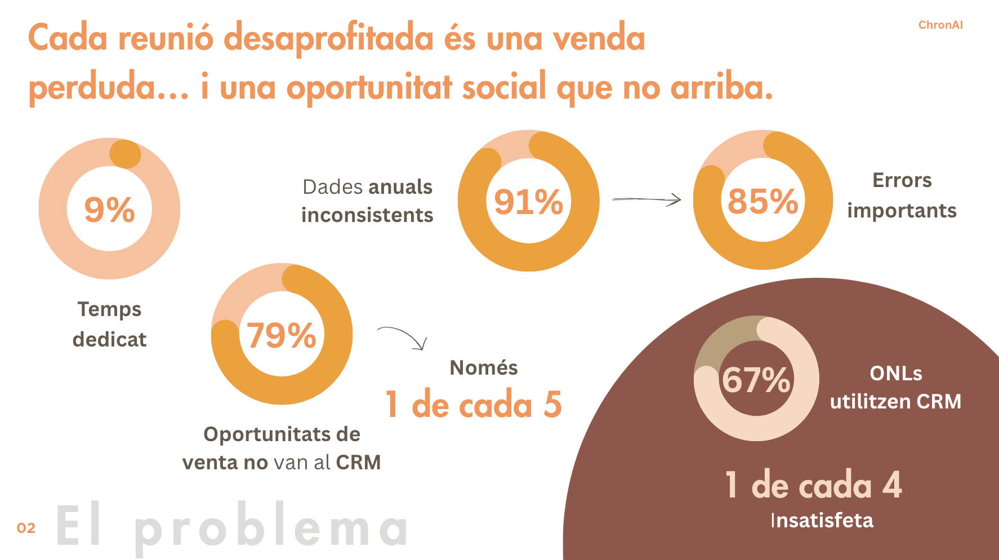
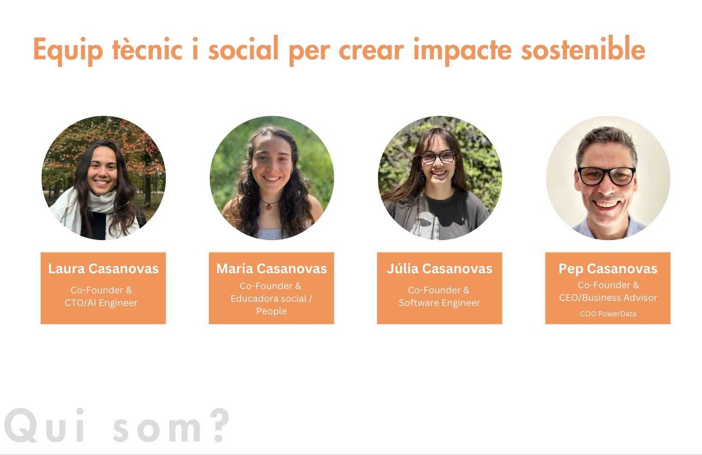

La solució

Les dades de vendes s'escapen: un 79% de les oportunitats no arriben al CRM i el 91% d'aquestes dades estan incompletes, desactualitzades o duplicades. El resultat? Errors importants que afecten el 85% dels venedors i entitats socials sense eines eficients de gestió.
El producte
ChronAI escolta, entén i actua: transcriu reunions, identifica sentiments i oportunitats de venda, crea esborranys per al CRM i automatitza el seguiment. Amb un model SaaS i impacte social integrat, ChronAI optimitza processos i multiplica resultats.
Qui som
Som un equip multidisciplinari format per especialistes en enginyeria de dades, desenvolupament de programari, innovació social i direcció estratègica. A ChronAI combinem experiència tecnològica i sensibilitat pel canvi social per crear solucions digitals amb propòsit.
Contacte
Vols formar part de la primera onada de proves pilot o tens dubtes? Escriu-nos!